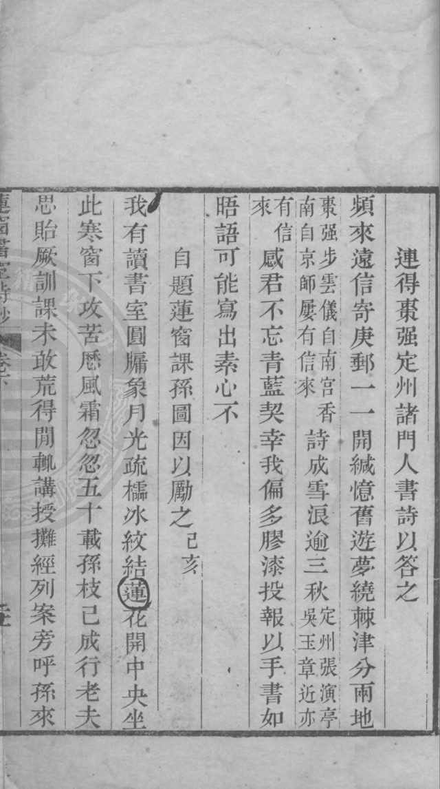
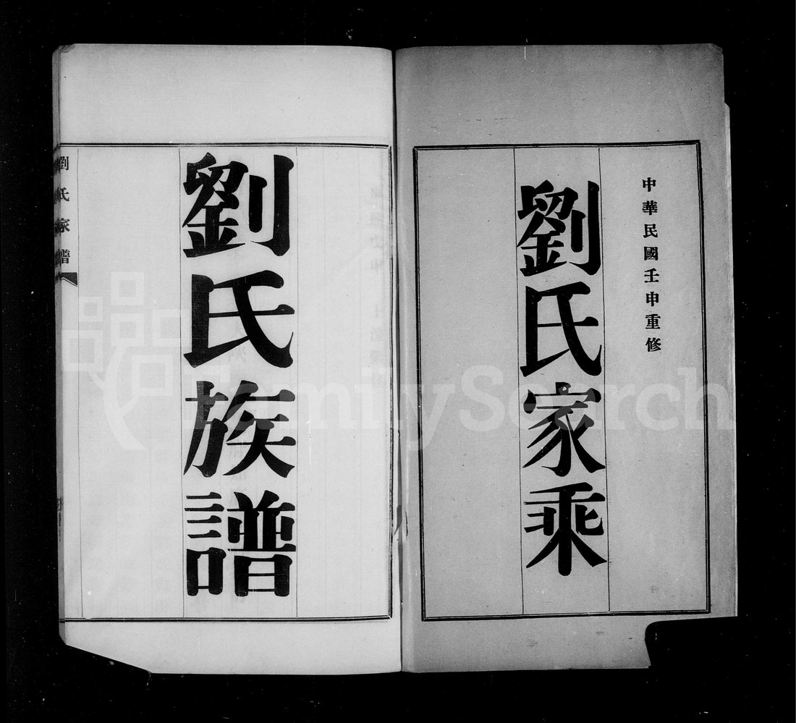
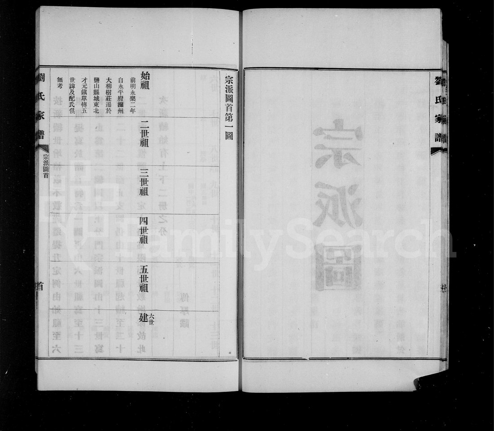
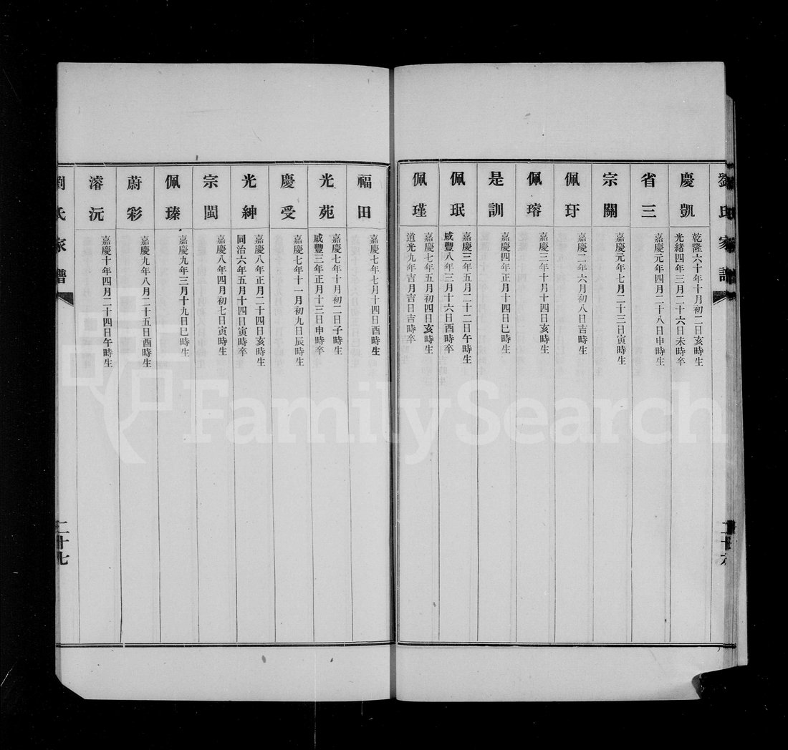

整理花絮
整理这个网站时攒下的几组图：著作篇讲几部书怎么从影印刻本变成网页上的文字，人物篇把十八篇小传里的年份、地点、科名、姻亲和资料来源画出来，家谱篇讲 1932 年的七修家谱。
著作
这几部书是怎么从影印刻本变成网页上的文字的：用了哪些 AI 模型，它们各自错在哪里，最后又是怎么定下每一个字的。
一页刻本的「解剖」

模型提的意见，能用的有多少
第一轮采纳率高，是因为当时错字还多；之后经过 Claude 逐句通读，剩下的错已经很少，后两轮的意见大多是误报。千问一轮包括全部五部书。
改动是一轮轮攒起来的
判了又翻的字
每一处改动在书里的位置
数据截至 2026 年 11 月 25 日，共统计 处已应用的录文改动（不含标点和白话）。
人物
本站人物小传十八篇，每篇正文后附全部原始资料。下面五张图都由这些小传整理而来，每个数据点都能回查到小传里的一段话；小传自己标了「推断」「待考」的，图上也照样标出。
宦游地图
数据说明：据各篇小传正文所记任职，共 56 条、49 处地点（42 条有年份）；坐标取今县治，旧治与今治不同的取旧治约略位置。虚线表示先后次序小传没有写明（如传任公署理河南各县，只按家谱所列次序连）。秦安（曾璇公授而未赴）、漳州（溎焴公）只见家谱或未赴任，画成空心点；山东新城（庆元公）年份未详，按先后次序连虚线。底图据 Natural Earth（公有领域），用今省界。
一生时间轴
数据说明：生卒据各篇小传；凡小传标「推断」「约」「待考」的，在横条上渐隐，鼠标移上可看原话与出处。1680 至 1715 年间没有可画的年份，横轴在此截断。大多数人的生卒据民国二十一年（1932）七修家谱卷首的「生卒年月」。
科举之路
考了几次
空心点＝一次落第；实心＝中式；「…」＝小传只说「屡试」，次数不详。
数据说明：据小传正文和小传所引朱卷。泽霖、曾珂、传任三公是拔贡，庆元公是副榜，均归入「廪贡」一级；廷对公是捐纳的太学生，没有入县学。合传里的曾璞、曾珊、庆第等未计入台阶。
姻亲
数据说明：据小传正文和两份朱卷（庆凯公 1826 年会试朱卷、溎焴公 1855 年乡试朱卷）。另有 7 人的配偶只知姓氏、不知娘家（如曾璈公配张氏、宋氏），图上不画。卫氏的祖父名字朱卷刻得不清，「卫琛」待核；绪武公两位配偶的归属朱卷录文也待再核。
资料从哪里来
数据说明：每条资料按所出之书归类（方志里收录的诗文、墓志也算方志，单独成书的传、行述、墓志算碑传·行述）；来路按影印出处判断：「国图扫描」指国家图书馆藏本在 Wikimedia Commons 上的扫描，「孔夫子旧书网」指购得的书影、影印件，「其他」包括家藏支谱、西南大学藏本照片、CBDB 缙绅录数据库等。整书 OCR 的页数据《古籍检索方法与覆盖记录》。
家谱
民国二十一年（1932）七修的《劉氏家譜》，原书藏在哥伦比亚大学东亚图书馆，1941 年入藏，四册，扫描下来是 451 个对开页。卷首收着历次修谱的序，还有国裕公一支逐人的生卒年月日时；这两部分，现在通行的支谱里都没有。
七修家谱的样子

扉页：《劉氏族譜》《劉氏家乘》

宗派图第一图，从始祖排起

「生卒年月」第十六世的一页，有庆凯公一条
历次修谱
| 修次 | 年代 | 主持 | 序 |
|---|---|---|---|
| 初修 | 康熙七年戊申（1668） | 泽霖公罢官回乡后修成 | 失传 |
| 再修 | 乾隆四年己未（1739） | 十一世期将公（颐武），与越菴、元善 | 十三世为庚序，乾隆七年 |
| 三修 | 乾隆四十三年戊戌（1778） | 嵩公等发起，十三世体临公（字济川）订正 | 体临序 |
| 四修 | 嘉庆二十五年庚辰（1820） | 曾璇公；曾璈公校勘，曾珂公排宗派图，曾莹缮写 | 曾璇《新修家譜序》 |
| 五修 | 咸丰六年丙辰（1856） | 庆凯公；曰萼公、庆集公校定，溎炡、溎焴校字 | 庆凯《續修族譜敍》 |
| 未成 | 光绪二十二年丙申（1896） | 溎焴公倡议，工作未到一半，他出任漳州知府，就此中止 | 见传恕、传厚序 |
| 七修 | 民国二十一年壬申（1932） | 监修传善（仙源），纂修传恕（绎菴），协修传厚（博生） | 传恕、传厚、贾恩绂 |
七修的职名页题作「七修劉氏家譜」，传恕的序却说从创修到这一稿「凡六易矣」，哪一次算作六修，序里没有说。庆凯公的序在这份扫描本里缺了一个对开页，已据 FamilySearch 所藏同书的另一份扫描补全；序里说到他那一次，「蓋自初修以來，譜凡五成矣」，正是五修。
一张生卒表改了十几篇小传
| 人 | 原来小传 | 七修家谱 |
|---|---|---|
| 廷对公 | 生卒无记载 | 雍正元年（1723）生，乾隆五十八年（1793）卒 |
| 静年公 | 推断卒于 1809—1812 年间 | 乾隆十五年（1750）生，嘉庆十四年（1809）卒 |
| 曾璈公 | 方志说「卒年七十八」，约 1849 年 | 道光二十七年（1847）正月卒，年七十六 |
| 曾珂公 | 诗注作「丁未」，曾疑当作「丁巳」 | 乾隆五十四年（1789）生，道光二十七年丁未（1847）卒，原刻不误 |
| 庆元公 | 据「卒年六十有六」推算 | 乾隆五十九年（1794）生，咸丰九年（1859）卒，推算不误 |
| 庆凯公 | 齿录作嘉庆二年（1797）生，卒年待考 | 乾隆六十年（1795）生，光绪四年（1878）卒 |
| 曰萼公 | 城破时中枪殉难 | 卒于四月二十六日，城破后十六天 |
| 庆集公 | 生卒待考 | 道光元年（1821）生；记卒于光绪十七年，与他光绪十八年作的序不合，待考 |
| 溎焴公 | 朱卷作道光十九年（1839）生，卒年待考 | 道光十六年（1836）生，光绪二十八年十二月（1903 年初）卒 |
| 溎烑、溎炡、传任 | 生卒待考 | 1816—1874、1819—1879、1844—1912 |
庆凯公和溎焴公父子，齿录、朱卷上的生年都比家谱晚，月日却一字不差：父亲少报两岁，儿子少报三岁。清代应考的人常把年龄报小，叫「官年」，考卷上印的多是官年。家谱是家里人记的，记的是真实的生年。
「比戶絃誦之聲」
序的开头说，盐山的大族十家有九家是明初永乐年间迁来的，到了清代，「其最久而最盛者，高爾莊之趙氏、趙毛陶之孫氏、東關之劉氏，蓋其選也」。接着讲刘家：
劉氏自甘露公以循吏起家，厥後毓衍盛昌，爲一邑之冠。它族號人望者，不一二傳輒見中替，獨劉氏世敦儒素，連五六世而不墜箕裘者，各支數見不爲鮮。
甘露公就是泽霖公。别家的名门传不了一两代就衰落了，刘家世代守着读书人的本分，接连五六代家学不断的，各支都有好几家。他常听人讲外家的旧事，长辈们说：
長老每言道咸以往，上迄康雍之間，……過東關衢巷者，惟聞比戶絃誦之聲。
从康熙、雍正到道光、咸丰，走过东关的街巷，只听见家家户户读书的声音。